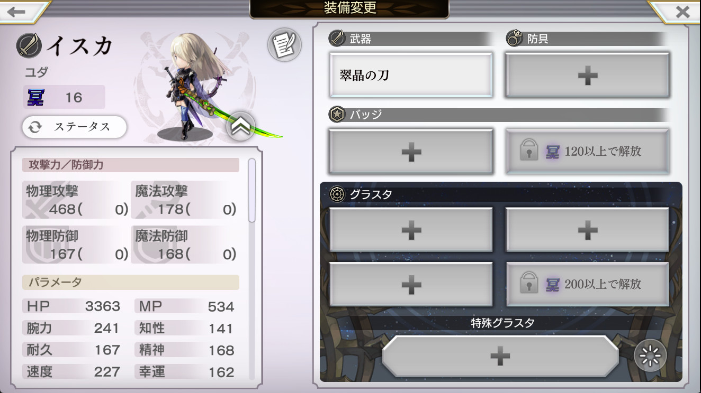
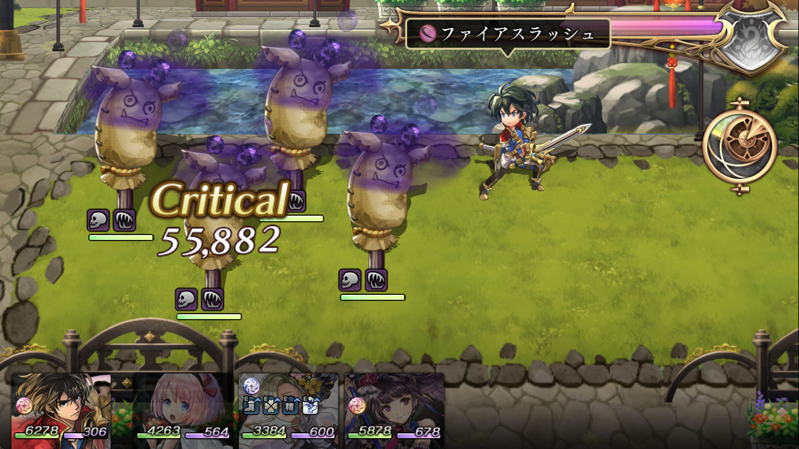
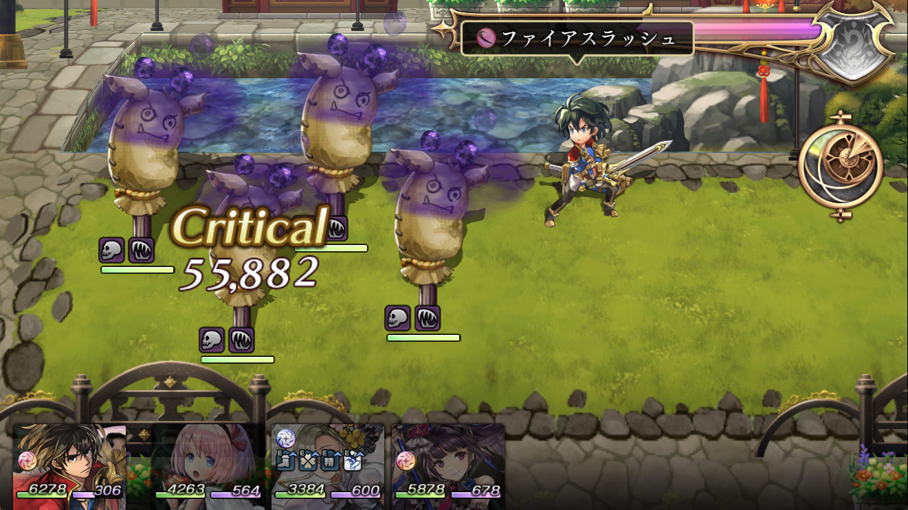
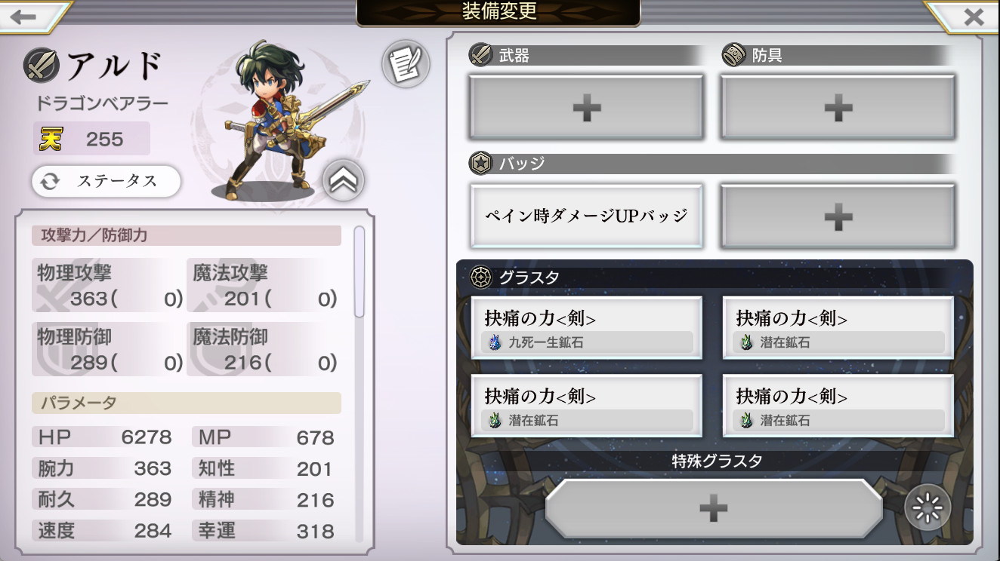

翠晶の刀（打ち直し）のペインダメージは15％
打ち直し後は20％ということになっているが15％が正しいと思われる


検証条件
- 攻撃468 腕力241 魔力178 知性141
- クレイブレイド 全体1.0倍 地斬
- 確定クリティカル（シュゼット）
| 20％の計算ダメージ |
22944,22965,22988,23010,23031, 23053,23076,23097,23119,23142, 23163,23185,23206,23229,23251, 23272,23295,23317,23338,23360, 23383,23404,23426,23449,23470, 23492,23514,23536,23558,23580, 23602,23624 |
|---|---|
| 15％の計算ダメージ |
21988,22008,22030,22051,22071, 22092,22114,22135,22155,22177, 22198,22219,22239,22261,22282, 22303,22324,22345,22366,22387, 22408,22429,22450,22472,22492, 22513,22534,22556,22576,22597, 22619,22640 |
| 確認したダメージ |
22008,22030,22051,22071,22092, 22114,22135,22155,22177,22198, 22219,22261,22303,22324,22345, 22387,22450,22472,22492,22513, 22556,22597,22619,22640 |
毒ペグラスタの順番でダメージが変わる ＝ 毒ペ枠は存在せずそれぞれ独立処理
毒ペグラスタを入れ替えると出現するダメージが変わる。 つまり毒ペのダメージは毒ペ枠内での乗算ではなくそれぞれ独立して処理されている。そしてその処理の度に小数点以下切り捨てが行われる。
また、これのせいで先人が検証した処理順が一部再確認が必要であると考える。え、やだ……。


 

- 攻撃358 腕力358 魔力201 知性201
- ファイアスラッシュ 単体1.4倍 火斬
- 確定クリティカル
- 潜在錬成壊毒（35％）と害毒（30％）を入れ替えて確認する
| 害毒壊毒の計算ダメージ |
55844,55883,55919,55959,55997, 56032,56071,56108,56147,56184, 56223,56261,56296,56335,56372, 56411,56449,56487,56525,56563, 56601,56637,56676,56714,56751, 56790,56827,56865,56901,56940, 56978,57016 |
|---|---|
| 確認したダメージ |
55844,55997,56184,56261,56411, 56487,56525,56563,56865,56940 |
| 壊毒害毒の計算ダメージ |
55843,55882,55919,55958,55996, 56034,56072,56108,56147,56184, 56223,56261,56299,56337,56372, 56411,56449,56487,56525,56563, 56601,56637,56676,56714,56752, 56790,56826,56864,56901,56940, 56978,57016 |
|---|---|
| 確認したダメージ |
55882,55919,56147,56184,56223, 56261,56299,56411,56449,56752, 56978,57016 |
グラスタよりバッジが先
厳密には他のバッジも同様であるかは要確認。


検証条件
- 攻撃363 腕力363 魔力201 知性201
- ファイアスラッシュ 単体1.4倍 火斬
- 確定クリティカル
- ペイン時ダメージUPバッジ（20％）と抉痛4つ（30％x4）
同枠でまとめて処理されないことも確認する。
結果| x3.42732の計算ダメージ |
112196,112271,112347,112422,112498, 112572,112644,112720,112795,112871, 112946,113021,113097,113169,113243, 113319,113394,113470,113546,113617, 113692,113768,113843,113919,113994, 114070,114141,114217,114292,114368, 114442,114518 |
|---|---|
| x3.4273 の計算ダメージ |
112195,112270,112346,112422,112497, 112572,112644,112719,112795,112869, 112945,113021,113096,113168,113243, 113318,113394,113469,113545,113616, 113692,113767,113843,113918,113994, 114068,114140,114216,114292,114367, 114442,114517 |
| x1.3...x1.2 の計算ダメージ |
112194,112269,112346,112418,112494, 112570,112640,112715,112791,112867, 112941,113016,113093,113164,113239, 113316,113392,113468,113542,113615, 113691,113766,113840,113916,113993, 114068,114137,114213,114287,114361, 114439,114514 |
| x1.2...x1.3 の計算ダメージ |
112193,112267,112346,112420,112495, 112570,112641,112714,112789,112863, 112942,113016,113092,113165,113239, 113314,113390,113467,113542,113613, 113690,113764,113839,113916,113990, 114067,114139,114214,114287,114362, 114440,114515 |
| 確認したダメージ |
112570,112714,112789,112863,113165, 113239,113314,113467,113542,113613, 113764,113916,113990,114067,114139, 114214,114440,114515 |